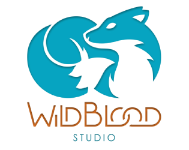
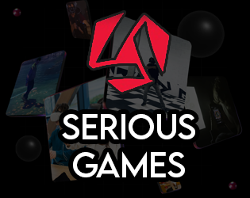
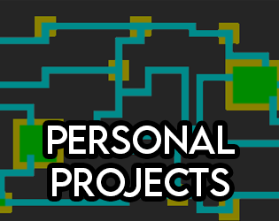
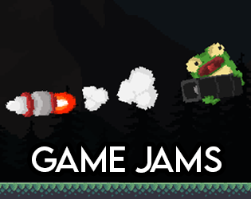
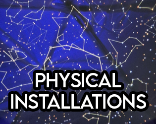

Hello ! I'm Louis VOGEL, a French gameplay programmer with a focus on Unity, C#, and fast prototyping. I especially enjoy creating responsive and juicy gameplay, system design, and building tools that improve the workflow of artists and designers.
I am currently looking for my next opportunity in game programming. I'm based in France and open to relocation worldwide, as well as remote opportunities.
I have around 3 years of experience in the video game industry, working across independent and serious game studios, and recently graduated with a Master's degree in game programming from CNAM-Enjmin.
Feel free to explore my work below! From student projects and game jams to prototypes and professional productions, everything here reflects what I enjoy most: making games, learning new things, and collaborating on cool projects!










